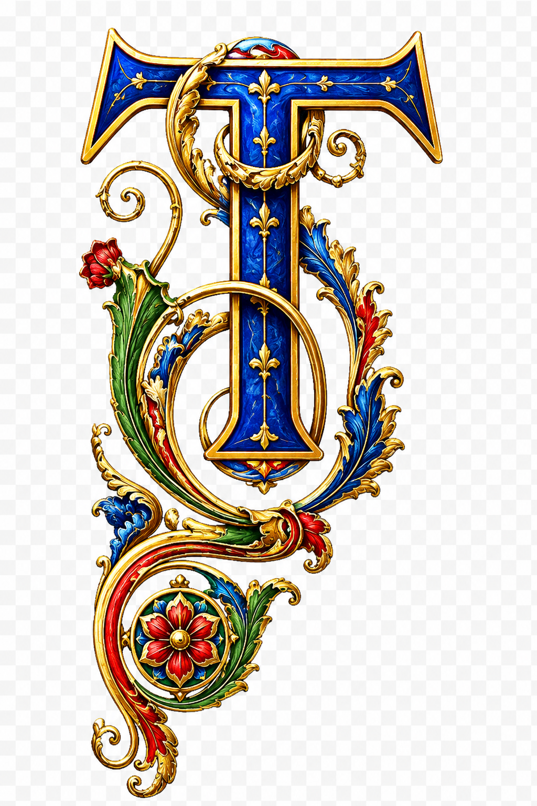

Architecture · Eurasia · 1000-1900 CE
König von England, Stuttgart
An object page for collecting images, notes, and reconstruction research around a Stuttgart architectural landmark.

önig von England: From a possible Renaissance-Era Domestic Building, to a Baroque Court Café, an Inn, and a Witness to History

Standing today in Schillerplatz, at the centre of Stuttgart's old town, between the Stiftskirche, the Altes Schloss, the Alte Kanzlei, and the Markthalle, one sees a restrained twentieth-century building composed of pale stone and regular window bays. Above its entrance, the name still reads: König von England, literally, "King of England."
This name is not a nostalgic trademark invented by a modern developer. It continues the name of a celebrated hotel destroyed in the air raids of 1944. Looking further back, the site is connected with Stuttgart's earliest public coffee house, eighteenth-century reading societies, a nineteenth-century high-class hotel, the travel histories of writers and musicians, and the post-war debate over whether historical buildings should be reconstructed or replaced by contemporary architecture.
Strictly speaking, the present König von England is not a single building that has existed continuously for several centuries. Rather, it consists of two architectural generations on the same site and under the same name: first, a timber-framed inn that developed from the sixteenth century onward, was substantially remodelled in 1798, and burned down in 1944; and second, an office and commercial building erected between 1954 and 1956, with an extension added in 1960/61.
Site: Between Court, Church, and Urban Public Life
The building stands at Dorotheenstraße 2, 70173 Stuttgart, at the junction of Dorotheenstraße, Kirchstraße, and Schillerplatz, at approximately 48.7766° N and 9.1785° E.
The significance of this location derives first from its relationship to Stuttgart's courtly quarter. In 1594, Duke Friedrich I of Württemberg commissioned the architect Heinrich Schickhardt to reorganise the space west of the palace. Older domestic buildings were purchased and demolished, and a representative Renaissance square was laid out: the later Schloss- und Kanzleiplatz. Before the twentieth century, today's Schillerplatz was usually known as the Alter Schlossplatz; only in 1934 was it officially renamed Schillerplatz.
The plot later occupied by the König von England lay on the southern side of the square, between the Altes Schloss and the Stiftskirche. Facing the court and administrative buildings on one side, and connected to the market and the lanes of the old town on the other, the site was naturally suited to lodging, dining, newspaper reading, and social exchange. Local historical accounts suggest that a building already stood on this corner in the sixteenth century. The large timber-framed hotel visible in old photographs was in fact formed through the combination and enlargement of three earlier building units. This also explains why it combined an early Fachwerk appearance with an interior spatial order unified at the end of the eighteenth century.
The following part is based on historical materials and on the reconstruction of old photographs through Al-assisted methods.
Was the First Coffee House Opened in 1696 or 1712?
This is one of the points in the existing literature that most requires correction.
The traditional date: 1712. Some local historical writings and later descriptions habitually identify 1712 as the year in which Stuttgart's first coffee house opened. According to this narrative, a coffee house began operating in 1712 on the later site of the König von England, and in 1798 it was converted into a hotel. This date appears in accounts of Schillerplatz, in Stuttgart im Bild, and in many subsequent descriptions of building projects; it has therefore circulated widely.
Archival research: already operating by 1696. The historian Alexandra Birkert, in her research on Stuttgart's early coffee houses, used materials in the Hauptstaatsarchiv Stuttgart that had received relatively little attention. Her findings point to an earlier date. In 1694, Sigmund Andreas Beck was already employed by the Württemberg court as Hof-Cafétier, a court coffee maker or court coffee entrepreneur. He first obtained the privilege of preparing coffee, then received permission to sell coffee publicly. In 1696, he purchased half of the Aulbersches Haus at today's Dorotheenstraße 2 and opened a public coffee house there.
This research moves the opening of Stuttgart's first public coffee house from the commonly cited year 1712 back to 1696. Birkert's article and its full bibliographic information can also be checked through the LEO-BW bibliographic record.
A more cautious formulation is therefore as follows: by 1696 at the latest, a coffee house open to the public existed on this site. The year 1712 is the date long repeated in older local histories, and may correspond to a change of management, enlargement, or institutionalisation; however, on the basis of publicly available materials and the present limits of my own research, its exact meaning cannot yet be determined.
The Großes Kaffeehaus: More Than a Place to Drink Coffee
In 1734, a smaller coffee house appeared behind the town hall in Hirschgasse. To distinguish the two, the establishment on Dorotheenstraße came to be known as the Großes Kaffeehaus, or Great Coffee House.
At first, it primarily served court officials, administrative personnel, visiting travellers, and so-called Cavaliers, that is, nobles and members of the upper social strata. Some operators were also permitted to sell liqueurs, confitures, and related goods.
Yet its significance soon extended beyond catering. In the coffee house, people read newspapers, exchanged urban news, discussed politics, and played billiards and cards. It effectively became one of Stuttgart's early semi-public spaces of information.
In 1788, the proprietor Heinrich Zacharias Glaser opened an Unterhaltungs- und Lesegesellschaft, a recreational and reading society, on the middle floor of the building. Members paid an annual fee of eight gulden. Initially, they could read twenty-nine scholarly or political periodicals, smoke, play billiards, and converse. The authorities were evidently concerned that the venue might become a space of political discussion; this anxiety itself demonstrates that the coffee house had changed from a courtly service facility into an urban public sphere for the middle classes.
The importance of the coffee house was even inscribed into the street name. A nearby lane was once called Kaffeehausgasse, or Coffee House Lane, before being renamed Dorotheenstraße in 1811.
1793-1798: From the Old Coffee House to Zum König von England
The transformation was not a complete demolition and new construction, but rather a process of combination, enlargement, and redesign.
In the 1790s, Glaser commissioned Reinhard Ferdinand Heinrich Fischer (1746-1813), then a senior building official in the Duchy of Württemberg, to remodel the property. Fischer served as herzoglicher Oberbaudirektor, ducal senior building director, and from 1775 taught architecture at the Hohe Carlsschule. His task was not merely decorative refurbishment, but the organisation of several existing building parts into a high-class hotel capable of unified operation.
Two dates survive in the available material: 1793, the date of a vaulted keystone bearing the initials of Heinrich Zacharias Glaser; and 1798, usually regarded as the year in which the overall hotel conversion was completed and the building formally became Zum König von England. This suggests that the work likely extended over several years rather than being completed abruptly in 1798 alone.
The exterior retained the character of a striking Fachwerkhaus, a timber-framed building. Old photographs show tall gables, dense and decorative timber grids, and a complex massing facing the square and church. Later writers described it as one of Stuttgart's most splendid or most beautiful timber-framed buildings; such descriptions, however, are evaluative rather than objectively rankable facts.
The more specific character of the 1798 transformation appeared in the interior, which adopted Klassizismus, or Neoclassicism. The second floor contained large banquet and dining rooms; spatial proportions, wall treatment, and decoration moved toward a classical order; and the formerly dispersed houses were integrated into a high-class hotel that could accommodate lodging, dining, reading, and sociability. In this sense, it rose from a coffee house to what Stuttgart called the erstes Haus am Platz, literally "the first house on the square," but in practice the leading hotel in the city.

he König von England was clearly a gewachsener Bau, a building that had grown over time. Its timber-framed tradition and parts of its earlier structure may have derived from the sixteenth and seventeenth centuries, while the overall hotel arrangement was produced through the combination and remodelling of previous buildings, chiefly at the end of the eighteenth century. As a researcher and devoted admirer of medieval and early modern civilisation, I have attempted to reconstruct in 3D the possible appearance of the building in its late seventeenth-century flourishing phase, using the history of German Renaissance architectural change, documentary materials on the König von England, and old photographs.3D Reconstruction
Possible late seventeenth-century appearance
Drag to rotate, scroll to zoom, and right-drag to pan.
Why Was It Called König von England?
The answer remains uncertain.
One linguistic issue should be noted first. After the Act of Union in 1707, the formal state was the Kingdom of Great Britain, and its monarch should strictly be called the King of Great Britain rather than the "King of England." Yet hotel names on the European continent often continued to use the popular designation "King of England." The name itself therefore cannot determine which monarch was intended.
One attractive but not archivally proven hypothesis points to King George III (1738-1820). George III's eldest daughter, Charlotte Augusta Matilda, married the Württemberg crown prince Friedrich in 1797. In 1798, the hotel began using the name Zum König von England. Friedrich later became King Friedrich I of Württemberg in 1806, and Charlotte became queen.
The close chronological sequence makes it tempting to understand the hotel's name as a gesture toward this Anglo-Württemberg dynastic marriage. At present, however, no document has been found in which the hotel operator or municipal authority explicitly states that it was named after George III. Existing accounts can therefore present this only as a plausible conjecture, not as a conclusion. Conservatively stated, the name König von England can be confirmed from around 1798; it may be connected with George III and the marriage of his daughter into the Württemberg royal family, but its direct archival basis remains unproven.
The Nineteenth Century: Celebrities, Literature, and Urban Sociability
Jean Paul: only two unpleasant nights. From June to July 1819, the writer Jean Paul stayed in Stuttgart for about a month at the invitation of the publisher Cotta. He initially lodged at the König von England, but remained there only two nights before moving to the house of the merchant Carl Mohr. Commemorative materials describe the hotel as the best in the city, but also as rather noisy. This detail is revealing: being "first class" did not imply quiet privacy. The hotel functioned more like an urban public living room, active throughout the day with arrivals, dining, conversation, and newspaper reading.
Wilhelm Hauff: the hotel in fiction. The Stuttgart writer Wilhelm Hauff placed an important part of the first half of his 1826 novella Die Bettlerin vom Pont des Arts at the König von England. The narrative is set around 1824. Characters move between the hotel and the gallery of the Boisserée brothers, then located on Königstraße. In Hauff's text, therefore, the König von England is not an arbitrary backdrop, but a real place where elite travellers, art lovers, and intellectuals in Stuttgart were likely to meet.
Ludwig Börne: the reputation of the table. The journalist and critic Ludwig Börne praised the hotel's public dining table highly. He compared the Wirtstisch or Table d'hôte of the König von England to Shakespeare among poets, and wrote that roasted dumplings, redcurrant cake, and other foods made the buttons of his clothing grow increasingly tight. Such writing shows that the hotel's reputation rested not only on its guest rooms, but also on its communal table, where travellers, writers, officials, and local citizens ate together at fixed times and exchanged news and opinions.
Chopin and the Stuttgarter Tagebuch. In September 1831, Frédéric Chopin stopped in Stuttgart on his way to Paris and is believed to have stayed at the König von England. There he learned of the failure of the Polish November Uprising and the fall of Warsaw, and wrote a set of intensely emotional notes later known as the Stuttgarter Tagebuch, or Stuttgart Diary. Chopin's stay in Stuttgart and the writing of these notes can be confirmed; the precise hotel identification is mainly preserved through biography and local historical tradition.
Das Strahlende Bergwerk. On 28 November 1850, the writer Friedrich Wilhelm Hackländer and others founded an artists' society in the hotel hall: Das Strahlende Bergwerk, The Radiant Mine. This was a male artistic association of writers, painters, musicians, actors, and scholars. Its members maintained sociability through parody, recitation, music, drawing, and ritual activities built around a "mine" metaphor. The society met regularly in the hotel hall, further demonstrating that the building's hall functioned simultaneously as dining room, banquet room, lecture room, and cultural clubroom.
1867: The End of the Hotel Era and the Beginning of Municipal Use
After the middle of the nineteenth century, railways, urban expansion, and new types of hotel changed the structure of Stuttgart's lodging industry. The old timber-framed inn, although historically prestigious, gradually lost ground in terms of facilities, transport conditions, and modern hotel standards.
In 1867, the City of Stuttgart purchased the König von England. Hotel operation ended; a court moved into the building, although available public materials do not clearly specify the court's precise level; the large banquet hall was later converted into offices; at one point, conversion into a Konzerthaus, or concert hall, was considered but not realised; and the municipal government ultimately prioritised the shortage of administrative office space.
Photographs from around 1905 show that the building had already become a municipal office building rather than an operating hotel. From 1867 to 1944, then, although it continued to bear the historical name König von England, its function had shifted from commercial hotel to judicial and municipal administrative space.
26 July 1944: The Destruction of the Historic Building
On 26 July 1944, Allied forces carried out a major air raid on Stuttgart. Around Schillerplatz, the Stiftskirche, Altes Schloss, Alte Kanzlei, Prinzenbau, Fruchtkasten, and other buildings were severely damaged. The König von England was also hit and burned down completely.
For timber-framed architecture, fire was especially destructive. Sources describe the building as völlig ausgebrannt, completely burned out. In other words, what remained after the war was not an old inn that could simply receive a new roof and repaired walls, but a fire ruin that had lost its internal and external structure, appearance, and practical usability.
A common statement today is that the other buildings around Schillerplatz were reconstructed, while the König von England alone was not. Several qualifications are necessary. The post-war rebuilding of surrounding buildings did not preserve all original substance, but involved varying degrees of exterior reconstruction, structural renewal, and re-creation of historical form. The König von England, by contrast, was deliberately not reconstructed as a timber-framed building. The city chose instead to erect on the same plot and approximate footprint a new building suited to contemporary needs.
The only clearly preserved architectural component of the old hotel is a sandstone entrance, now held in the Städtisches Lapidarium Stuttgart under inventory number 90. This portal is dated 1798, attributed to Reinhard Ferdinand Heinrich Fischer, bears the inscription "Burg-Fried," and is currently the clearest and most complete surviving architectural remnant of the old hotel. A further keystone dated 1793, bearing the initials of Heinrich Zacharias Glaser, is listed in the catalogue as Abgang, meaning no longer in the collection or whereabouts unknown.
1954-1961: The Second König von England
Why was the timber-framed hotel not rebuilt? In the early post-war period, Stuttgart's municipal building department proposed a zeitgemäßer Neubau, a contemporary new building, for the site. It is worth noting that the design did not pursue the most radical flat-roofed glass box. Instead, it required a Walmdach, or hipped roof, so that the building would harmonise with the historical silhouettes of the church, the Markthalle, and the Altes Schloss.
In 1954, the architect Karl Gonser (1902-1979) was commissioned to develop the design. Gonser had encountered the architectural tradition of Paul Bonatz in Stuttgart and had worked in Berlin for Erich Mendelsohn. He later participated in urban planning, architectural education, and the reconstruction of Heilbronn's old town. The building is therefore not an anonymous office block, but a mature case in post-war South German architectural culture: how modernisation and the scale of the old city might coexist.
Two phases of construction. The present building consists of two perpendicular volumes: the four-storey main building on Dorotheenstraße, constructed between 1954 and 1956; and an equally high wing along Kirchstraße, added in 1960/61 at a right angle to the main block. The topping-out ceremony for the extension took place on 14 April 1961, and the state archive preserves construction photographs then labelled "Englischer König."
Structure and appearance. The principal features of the second König von England include a Stahlbetonskelett, or reinforced-concrete frame; cladding in pale Travertin; a clear and repeated Raster, or façade grid; full-height window units originally framed in striking blue-green metal; an off-centre Erker, or oriel/bay window, that interrupts the excessive regularity of the grid; a recessed ground floor forming an Arkadengang, or arcaded walkway; continuation of the pedestrian space of the neighbouring Markthalle through modern structure and proportion; small-scale Mosaik on the ceiling of the arcade; and a hipped roof set back from the wall edge, almost invisible at close range, which gives the building both the horizontal quality of a modern flat-roofed structure and the roof silhouette required by the historical cityscape.
The value of this building lies precisely in the fact that it does not copy the gables, beams, and ornament of the old timber-framed hotel. Instead, it responds to the surrounding historical buildings through height, massing, stone, roof form, and arcade. What it preserves is the urban spatial relationship, not the old architectural skin.
From a "Modern Building That Destroyed the Old" to Protected Cultural Heritage
Over time, the second König von England itself became historical. In 1984, the building was placed under heritage protection. Stuttgart's cultural heritage inventory identifies it as Bürohaus, Haus König-von-England, built in 1954-1956, in the Internationaler Stil ab 1950, or International Style after 1950, by Karl Gonser. It is protected as a Kulturdenkmal under Section 2 of the Baden-Württemberg Monument Protection Act.
This produces an intriguing historical cycle. In the 1950s, people judged that the timber-framed hotel of 1798 should not be reconstructed and ought to be replaced by modern architecture. By the 1980s, that "modern replacement" had itself become a protected historical building. Today, any further alteration to it can no longer freely change the window frames, stone cladding, colours, or façade proportions.
2010-2012: Conservation Repair and Modernisation
A major renovation began around 2010 and was completed in 2012. The design was undertaken by Stuttgart-based zsp architekten / Peter Vorbeck. The project cost approximately seven million euros and covered a total usable area of about 4,700 square metres.
The aim was not to make the 1950s building look like a new building, but to allow it to continue serving governmental office needs while retaining its original character. The work included repairing the roof and façade performance; improving thermal insulation and energy efficiency; preserving the reinforced-concrete frame and travertine façade; retaining as many original Stahl-Verbundfenster, or steel composite windows, as possible; using historical photographs and coating analysis to recover original colours on parts of the walls and window frames; removing hazardous building materials; improving fire-protection systems; renewing mechanical, electrical, and building services; replacing lighting throughout the building with energy-saving LED systems; and keeping the ground-floor shops in operation during renovation.
The top floor, which had originally contained residential spaces, was converted into meeting and event rooms. A meeting room of approximately 100 square metres received a gold anodised aluminium mesh acoustic ceiling. This not only improved the acoustics of the long, narrow space, but also responded, in a highly restrained way, to the "king" in the building's name. The lighting design used square Modul-Q luminaires to echo the façade grid, while round Modul-R luminaires created local spatial emphasis.
Present Use
As of 2026, the building remains one of the office locations of the Ministry of Finance of Baden-Württemberg. The ministry's organisational document of January 2026 indicates that Dorotheenstraße 2 currently houses, in particular, Division 3 of the ministry and the Hauptpersonalrat, HPR, the central staff council. The ministry's principal address remains the Neues Schloss, but Dorotheenstraße 2 is officially listed as an additional office building.
Commercial space has remained on the ground floor since the 1950s. Individual shop operators change over time, but the general arrangement of ground-floor commerce with administrative offices above continues Karl Gonser's original programme.
Conclusion
In summary, 1944 marked an end in the history of the König von England, because the old hotel and most of its physical traces disappeared. What survived can be understood on four levels.
- Continuity of place. From a sixteenth-century domestic building, to the coffee house around 1696, to the hotel of 1798, and finally to today's Ministry of Finance office building, public urban activity has never entirely left this corner.
- Continuity of name. After 1798, König von England became the identity of the site. Even when the hotel closed, when courts and municipal offices moved in, when the old building burned, and when the new building was completed, the name remained.
- Continuity of public function. At first, people drank coffee, read newspapers, debated, and played billiards; later, they lodged, dined at the public table, attended banquets, and joined artistic societies; later still, the building housed courts, municipal offices, government departments, and ground-floor shops. The site has consistently stood at the boundary between public life and administrative life.
- Continuity of urban scale. The post-war building did not reproduce the timber-framed gables. Yet through massing, hipped roof, travertine, arcade, and height, it maintained the spatial order of Schillerplatz and the area around the Stiftskirche.
From a sixteenth-century domestic building, to a late seventeenth-century coffee house, to a late eighteenth-century hotel, and finally to a ruin on the eve of the mid-twentieth century, the former beauty, grandeur, and density of the König von England may no longer be reproducible. Perhaps this is precisely where the building's force lies. It is not an unchanged history poured into material form; it is a mirror of history, recording urban memory, historical transformation, and the inheritance of narrative. It reminds us that beauty, love, and peace are not separate ideals, but one and the same horizon.
- Era
- 1000-1900 CE
- Location
- Eurasia
- Type
- Architecture